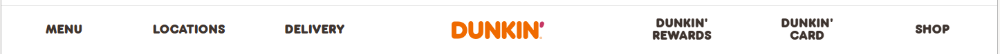

Typography Article
As with color, typography is a key facet to marketing and establishing an easily identifiable brand through advertisements and websites. Specifically in this instance, the differences between Starbucks and Dunkin' and how each company uses typography to present a consistent image. How clear the font is to the shape of the characters plays into the accessibility and the ease of which information can be translated to customers.
Starbucks Typography
Starbucks utilizes the same font over their whole website. The various forms it takes show the full picture of the typography they have in place. In the navbar, the text is all caps, taking up the same vertical space and providing a uniform look that is clean without drawing undue attention.
Scrolling further down Starbucks' home page reveals text in regular case. There is a variance of color depending on the background the text sits. However all the text advertising various featured drinks shows a standard larger size font with smaller size font below for the description and still a little smaller in the button to link to order. It is simple, clean, and has a natural flow, aiding the user to navigate the page simply.
The simplified Sans-Serif text Starbucks uses makes the menu easy to read and scan through without difficulty. The blunted ends of the characters emphasize the no-nonsense listing of what they offer. This is especially beneficial when it comes to the content about Starbucks' rewards program. There is more text within a smaller space and the simple, clean typography presents no obstacles for readability.
Dunkin' Typography
Dunkin' varies with its use of typography. The headings and bolder text is the appearance most customers would find coming to mind at the thought of the company. The ends of the arms of the characters are rounded and sharp corners where the arms meet. It is a Sans-Serif font, clean but made to draw attention. The navbar headings and other bolder text uses this rounded font.
A clear visual of the focal typography can be seen on an image of a coffee cup with the text descending down the cup, turned on its side. It pulls into the forefront the image of the brand.
The main body text is also a San-Serif without the rounded ends. It makes the content clear and easier with readability. The blunted ends allow the bolded and larger, rounded text to stand out even more. Dunkin' utilizes this when there are larger portions of text on the webpage as seen with the Rewards content and advertisement for their application.